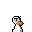
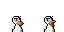

Quackhead will allow you to create hat packs without doing any coding at all!
This page provides instructions detailing the process of creating a hat pack.
The first step is to draw the hats, there are two different styles of hat you can use.
The first of these is a 32x32 basic image, hats drawn with this template don't animate when you quack.
The second option is to use a 64x32 image, this image will animate between two frames when you quack.
You should download the correct template for the type of hat you wish to draw.
Template 1: 
Template 2: 
Right click on the image and then "Save image as" to save the templates.
You should draw your hats a layer in front of this template, and export them as transparent PNG files without the template layer.
You probably won't be able to do this with MS Paint.
When finished creating your hat textures, go to the quackhead webpage (here).
Click "Add Team" and select the png files you created
For each team type a team name.
Click "Export as Modpack" at the top.
Fill in the following fields, described below:
"Name" - Unique Name for your mod
"Description" - One line description of your mod
"Author" - Name / Username of the mod creator
"Version" - Must be a number, describes the version of your mod.
Once done, click "Download Exported Modpack"
Open the .zip file, and copy the folder inside to your Documents/Duck Game/Mods folder
Start duck game, and as soon as you can, try to change your hat. Check that your new hats work correctly.
Be aware that with mod packs, you can ONLY play with people that have the exact same combination of mod packs
If you have problems, you can remove the mod from your Mods folder to get things back to normal.
(this step is completely optional, but recommended)
The thumbnail is a square image that will be shown on the workshop and mod browser.
Create a 256x256 png file and name it "preview.png", put it in the "content" folder inside the mod directory.
You can publish your mod so other people can use it. In the settings page, go to "Manage Mods".
From there, you can publish your mod.